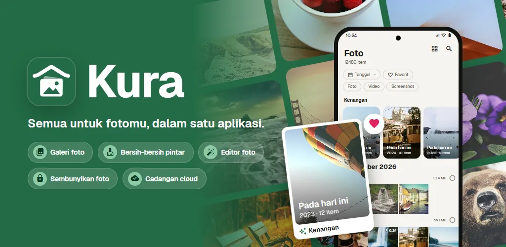
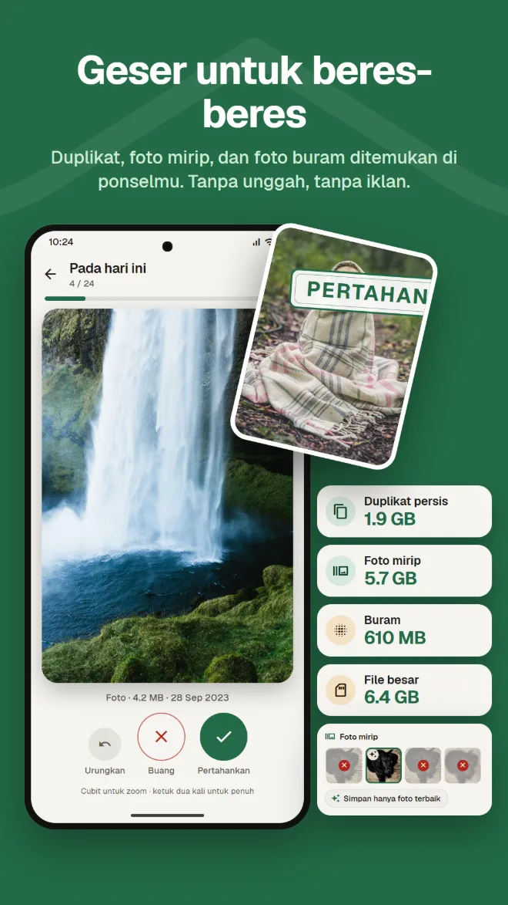
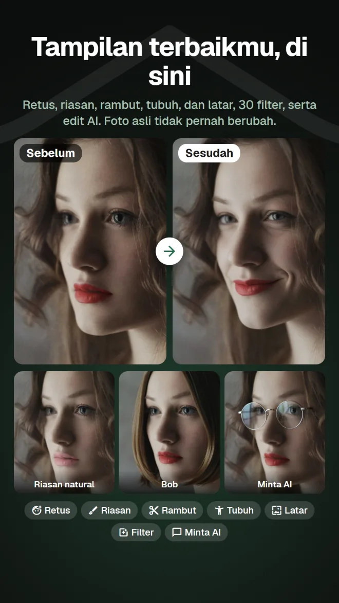
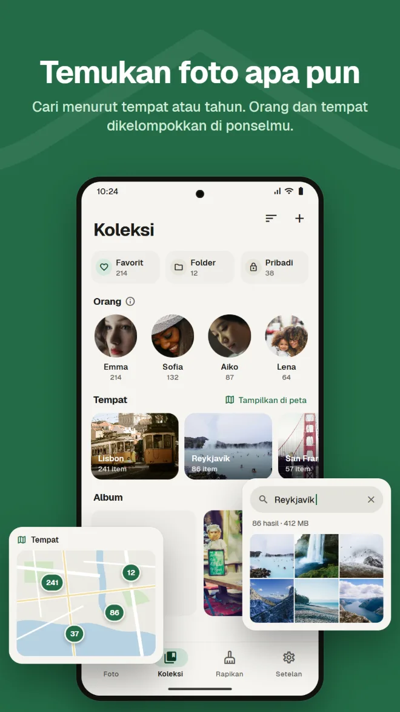
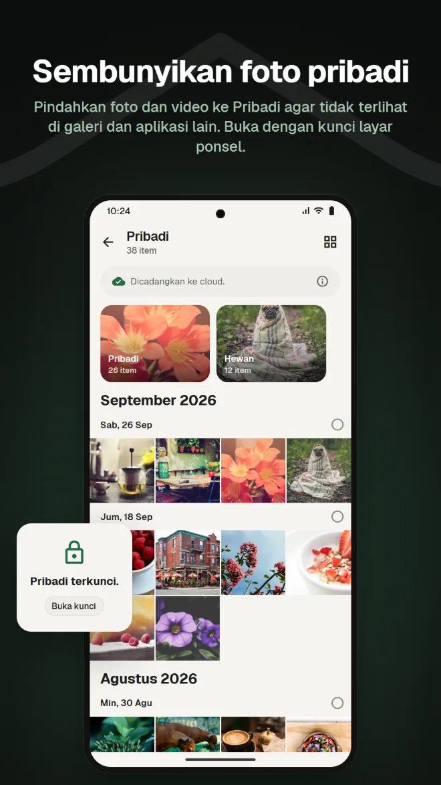
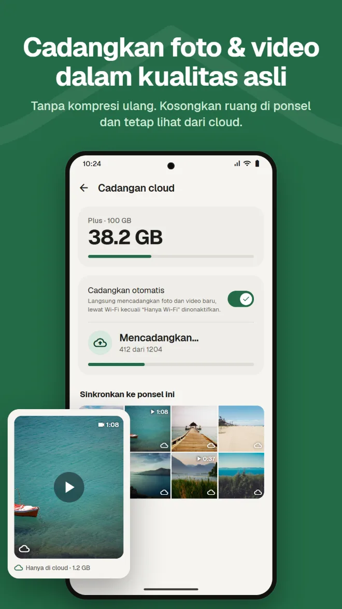
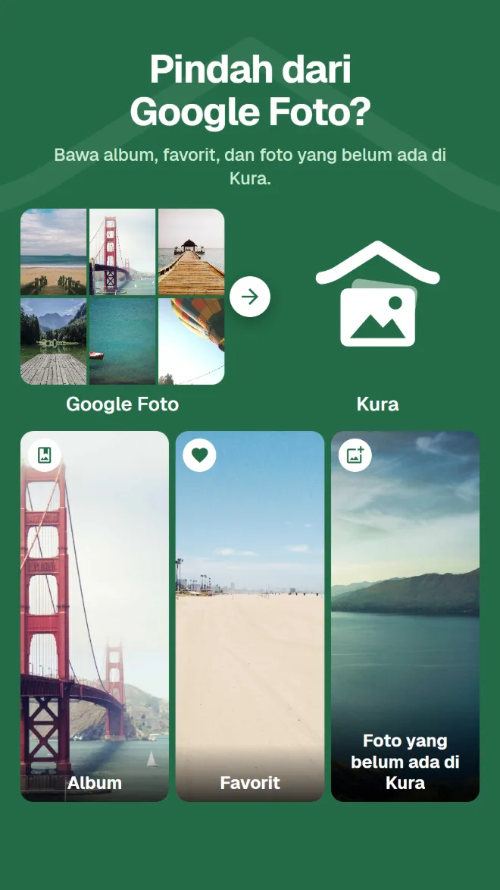

Cari isi foto
Temukan foto menurut tempat, isinya, atau teks di dalam gambar.
Galeri, pembersihan, edit AI, ruang pribadi, cadangan, dan pindah dari Google Foto. Dengan Kura, Anda tidak perlu aplikasi berbeda untuk masing-masing.
Android 11 atau lebih baru · Melihat, merapikan, dan menghapus gratis · Masuk dengan Google

Galeri untuk melihat, aplikasi pembersih untuk mengosongkan ruang, aplikasi lain untuk mengedit, layanan lain lagi untuk mencadangkan. Setiap kali berpindah, Anda harus mencari foto yang sama lagi.
Kura melakukan semuanya dalam satu galeri.
Lihat, rapikan, edit, dan cadangkan foto yang sama, di tempat yang sama.
Dari galeri hingga pembersihan, edit, pemindahan, dan cadangan.
Kura menemukan duplikat persis, foto mirip, foto buram, dan file besar di ponsel Anda. Geser ke kanan untuk mempertahankan, ke kiri untuk membuang, dan langsung lihat berapa banyak ruang yang bisa dikosongkan.

Retus, bentuk wajah, riasan, rambut, dan latar, ditambah 30 filter, penyesuaian, dan potong. Ada filter yang membuat makanan tampak lezat dan alat tubuh untuk seluruh sosok Anda. Selalu disimpan sebagai salinan, jadi foto asli tetap utuh.

Grid menurut tanggal, dengan kenangan dari hari yang sama di tahun-tahun sebelumnya. Cari menurut tempat, isi foto, atau teks di dalam foto, dan wajah dikelompokkan per orang di ponsel Anda.

Pindahkan foto dan video ke Pribadi agar tidak terlihat di galeri dan aplikasi lain. Buka dengan kunci layar ponsel.

Cadangkan foto dan video tanpa kompresi ulang. Hapus salinan yang sudah dicadangkan dari ponsel untuk mengosongkan ruang; tetap bisa dilihat dari cloud.

Cukup kirim file .zip Google Takeout dari aplikasi atau aplikasi web. Kura membawa album, favorit, dan foto yang belum ada di Kura. Server Kura membukanya di latar belakang, jadi Anda bisa menutup aplikasi dan browser.

Foto di cloud Kura Anda bisa dilihat, diatur, dirapikan, diedit, dibagikan, dan diunggah di aplikasi web, sama seperti di aplikasi. Favorit tetap sinkron dengan aplikasi.
Buka aplikasi webMasuk dengan Google · Bahasa Inggris dan Jepang
Semua yang Anda harapkan dari galeri yang dipakai setiap hari.
Temukan foto menurut tempat, isinya, atau teks di dalam gambar.
Wajah dikelompokkan per orang di ponsel Anda, dan foto Anda tampil di peta.
Foto dari hari yang sama di tahun-tahun sebelumnya, di bagian atas galeri.
Penyesuaian kecerahan dan warna, potong, dan kuas, plus filter untuk makanan.
Tambahkan masa berlaku dan sandi, lalu kirim ke orang yang tidak punya aplikasinya.
Konfirmasi dengan kunci layar setiap kali dibuka. Anda juga bisa menyembunyikan Pribadi.
Pasang, dan foto Anda langsung muncul dalam keadaan rapi.
Dapatkan di Google Play (Android 11 atau lebih baru)
Pilih "Izinkan semua" untuk memuat seluruh galeri
Masuk dengan Akun Google Anda
Langsung rapikan; tambahkan cadangan saat Anda perlu
Tanpa iklan. Anda hanya membayar saat memakai cloud.
Semua yang ada di ponsel Anda
Ditagih bulanan lewat Google Play. Batalkan kapan saja
Google Play menampilkan harga dalam mata uang lokal Anda.
Foto hanya keluar dari ponsel saat Anda melakukan sesuatu yang jelas mengirimnya ke suatu tempat.
Deteksi duplikat, buram, wajah, objek, dan teks berjalan di ponsel Anda. Tidak ada foto yang diunggah untuk dipilah.
Android bertanya sebelum file apa pun dihapus, dan foto yang dibuang tetap di Sampah sampai Anda mengosongkannya.
Saat Anda masuk, server kami hanya menyimpan ID Akun Google Anda. Nama dan alamat email Anda tidak pernah dikirim.
Edit AI hanya mengirim area di sekitar wajah, dan foto maupun hasilnya tidak disimpan di server.
Tanpa iklan · Melihat, merapikan, dan menghapus gratis